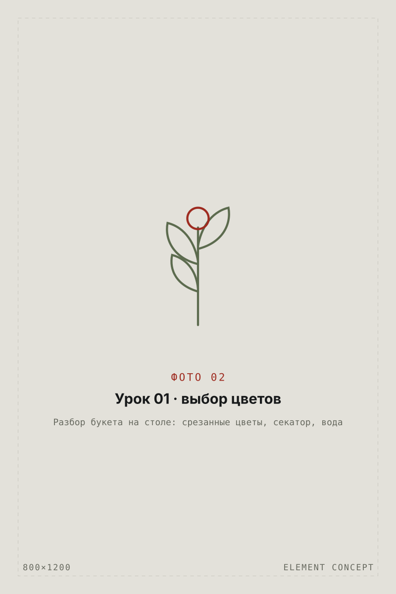
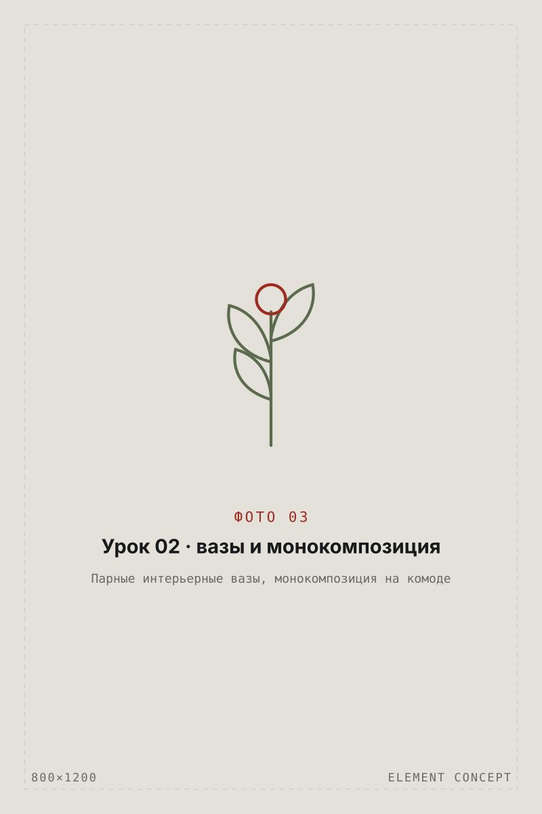
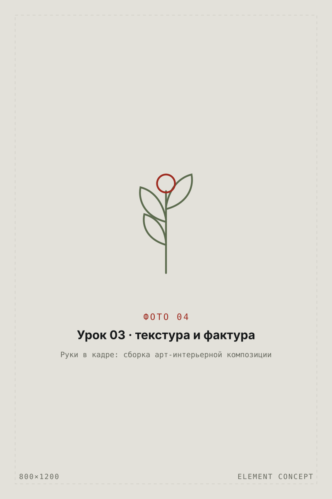
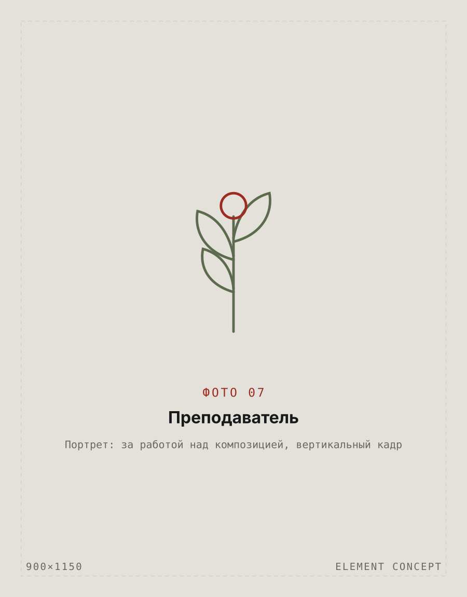

01
раздаточный материал
Рабочая тетрадь курса и ручки. В тетради — конспект каждого урока, схемы композиций, списки цветов и ваз, чек-листы по уходу. Остаётся у вас навсегда.

- Рабочая тетрадь
- Ручки
- Чек-листы
Курс · Набор в группу открыт
Месяц о том, как цветы живут в доме: какие покупать, во что ставить, с чем сочетать и как собрать композицию, которая держит комнату. Практический курс интерьерной и домашней флористики для себя, а не для профессии.
Занять место в группе
Цветы дома — это не букет. Это часть интерьера.
Мы разбираем флористику так же, как разбирают интерьер: через пропорцию, объём, цвет, текстуру и место в пространстве. Не «что подарили», а что вы осознанно ставите на стол, на комод, у окна — и почему именно это.
Этот курс расширит ваше понимание цветов
Для кого
Программа курса
Каждое занятие интерьерной флористики — теория и сразу практика. Всё, что соберёте руками, уезжает с вами.
Вводное занятие
Что заберётеПерестаёте покупать цветы наугад — видите, из чего собран букет и как он поведёт себя дома.

Теория + практика
Что заберётеМонокомпозицию и понимание, как цветы и вазы работают вместе с интерьером.

Урок-практика
Что заберётеДве готовые композиции: базовую и арт-интерьерную.

Финальное занятие
Что заберётеСобственный сет: от посуды и текстиля до цветов и деталей, которые запоминают гости.

Что входит в стоимость
Цветы, вазы, инструменты и раздаточный материал — на нас. Нужна только сумка для готовой композиции.
01
Рабочая тетрадь курса и ручки. В тетради — конспект каждого урока, схемы композиций, списки цветов и ваз, чек-листы по уходу. Остаётся у вас навсегда.
02
Визуальная часть к каждому занятию: разборы, примеры, сравнения «до / после».
03
Подборка студий, брендов, интерьеров и сет-дизайнеров, за которыми стоит следить.
04
Всё для практики на каждом занятии — сезонные цветы, интерьерные вазы, инструменты.
05
Всё, что собираете руками, уезжает домой вместе с вами.
Работы участниц


Результат

Кто ведёт
Курс ведёт основатель студии — практикующий флорист и сет-дизайнер. Здесь будет имя преподавателя, опыт и пара проектов для доверия — впишите свой текст.
Стоимость
Место фиксируется предоплатой. Группа набирается один раз — 6—8 человек.
Вопросы
Нет. Курс интерьерной флористики рассчитан на тех, кто начинает с нуля и хочет собирать цветы для своего дома, а не работать флористом.
Ничего. Цветы, интерьерные вазы, инструменты и раздаточный материал входят в стоимость. Понадобится только сумка для готовой композиции.
Присылаем презентацию и конспект урока, практику разбираем отдельно — по договорённости внутри потока.
Да, оплату частями обсуждаем индивидуально при бронировании. Предоплата фиксирует место в группе.
От 6 до 8. Камерный формат нужен, чтобы у каждой участницы была практика с разбором преподавателя.
Запись на курс
Напишем даты воскресений, ответим на вопросы и забронируем место. В группе 6—8 человек — набор закрывается, когда места заканчиваются.
60 000 ₽курс целиком · 4 занятия
Записаться